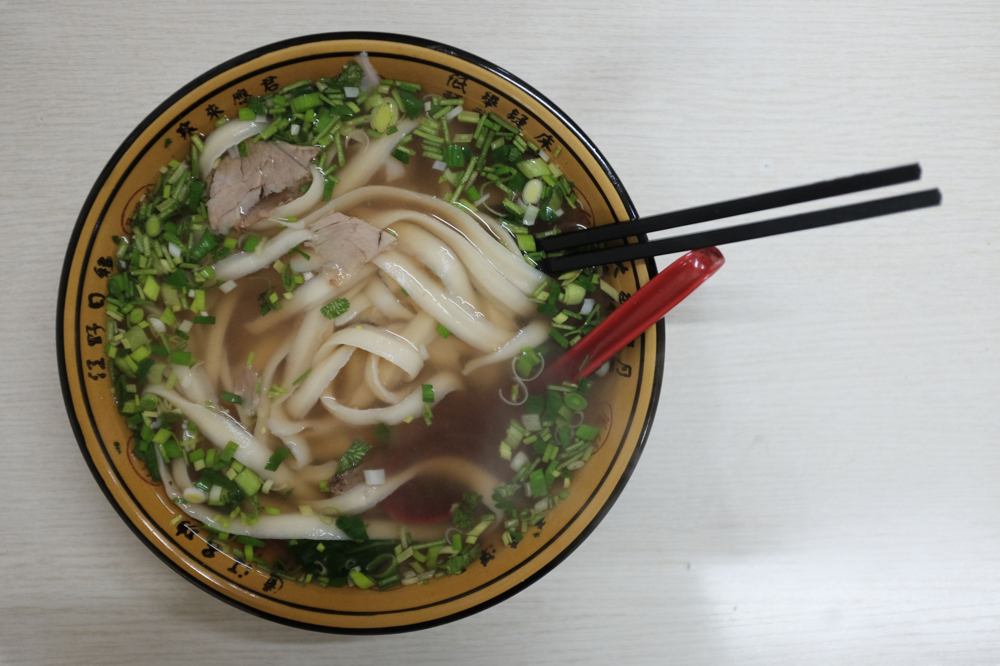

We arrive to Dalian at night. Back to the station with the characters 大連 propped on top, and nothing more. The city looks the same, except this time it's more polluted. When the pollution settles in, it crates a different atmosphere, a feeling of strangeness or distance, as if we've never been here before.
At night, we pop down to a noodle shop nearby. In it, signs labeled saying that it's a Muslim place and so they don't serve alcohol. A woman wearing a hijab comes and takes our order in Chinese, an accented Mandarin but perfectly intelligible. The husband then comes out and, as he does, we order another drink, and he also speaks to us in Mandarin.
All the customers in the shop looked ethnically ambiguous. They were not speaking in Mandarin, rather, some form of dialect. We're not sure if they're speaking in Uighur or some Chinese dialect, but no one in the shop speaks Mandarin to each other consistently. Occasionally, Mandarin will pop up if they answer a phone from another friend or order in Mandarin, but otherwise, this shop is all ethnic. They look almost southeast Asian, but some of them have stronger kind of Eurasian, Turkic features witih prominent noses and deep set eyes. They look Asiatic still, but they don't look like the Han Chinese. What a beautiful people and diversity in this little Lanzhou noodle shop. They also prepare a mean 刀削麵, Dao Xiao Mian, which loosely translates to "Knife-peeled noodles" -- noodles carved out of a block of dough through oblique strokes along the dough's surface.

A friend contacts us in Dalian and invites us out to an undergroud bar. In it, there is a group of regulars, the bar staff and their friends, and then us. People variously take turns doing karaoke on stage, drowning out the possibility of any conversation in the room. They are all great singers. There is also a gay bear and a lesbian on stage singing. Again, I tell you about the diversity I see in this country. We finish our drinks, and then head in for the night.
On the flight out, There aren't many people from Dalian to Qingdao. It's almost empty. I wonder if it's any allusion to the economic development in the Dong Bei region and how it's been an area with a population loss and declining workforce in the past few years. When we land in Qingdao, it's different from the first day we landed in given all the coal pollution. The only visible thing from afar is a small Chinese flag, its red a stark contrast with the murky gray, flying solo in the distance. It's only 15:00 but it looks 18:00.
As we leave Qingdao, it just turns out to be sunset, around 16:00. It's a perfect time for sunset. We fly up, past the smog and through the clouds, and the clear sky stretches for miles. The rays of the sun illuminate the clouds at an angle, and given the ruffled shape of the clouds it looks like small mountains; small waves continually crashing into the sea and creating fluffy white waves. I'm happy that, as I leave China, the last view I have of this place is from the sky as I reflect back on the experience. The color changes from a deep red to a light orange, then to a soft peach as the rays finally enter in the airplane windows. And then, night.